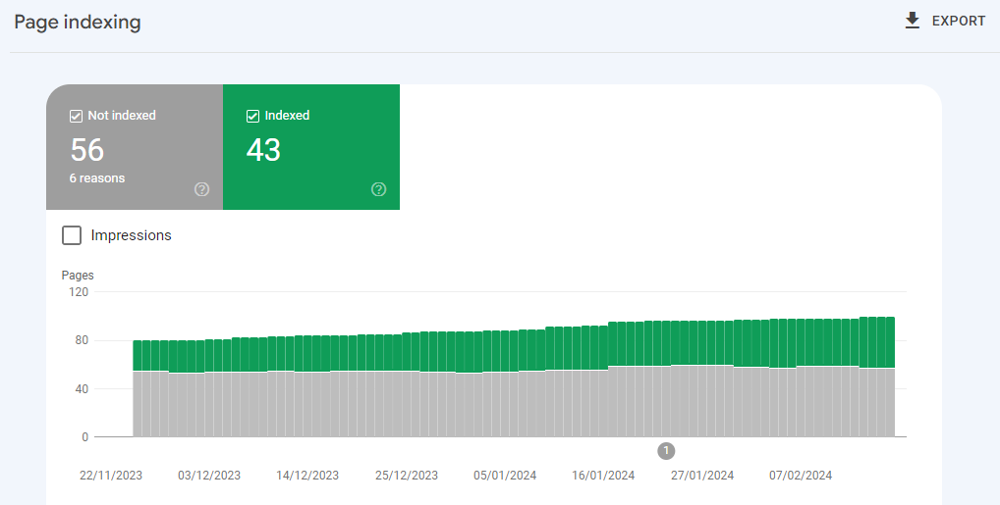
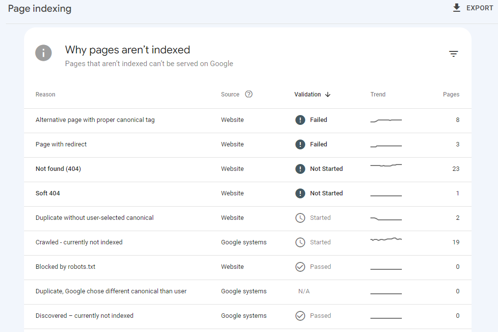

Date updated: 10 March 2024 | by Sybil Mayard
What is Google Search Console?
If you are looking to improve the SEO (search engine optimisation) of your website and you want to monitor the performance of your website on Google search, you will need to use Google Search Console. It's a free tool provided by Google which helps you to understand how many times your website is appearing in search results, how many clicks your site is receiving, and much more. In this blog post, I'll be covering the main features of Search Console.
Accessing Google Search Console
Sign in with your Google account, then navigate to Google Search Console.
You will see this screen:
Creating a Property
The first thing you'll need to do is to select a property type. There are two options: domain and URL prefix. It is recommended to try the domain option first.
Type your domain in the box (without the http or https), and click Continue. If your domain provider is automatically detected, click Start Verification and follow the instructions to verify your domain.
You should see a message as shown below. Click Go to Property.
If your domain provider is not listed, select Any DNS provider, and follow the instructions to connect the domain manually.
If domain verification doesn't work, you will need to choose the URL prefix option. Type the full URL of your website in the box (including the https) and click Continue. You will see a screen as shown below. You will be shown a variety of different methods to verify ownership. Choose one of the methods, follow the instructions and click Done.
If the verification was successful, you will see a message like so. Click Go to Property.
Submit Your Sitemap
A sitemap is a specialised page which lists all of the visible pages on your website. The sitemap also helps search engines to know which pages to crawl on your site. To locate your sitemap, it can usually be found by typing https://example.com/sitemap.xml into the address bar of your browser (replacing example.com with your domain). If you get a blank page or an error, it may be that your sitemap hasn't been set up yet. Check your website builder's documentation for further information.
Once you have found the URL of your sitemap, in Search Console, click the Sitemaps tab (below Indexing). In the blank space below Add a new sitemap, enter the URL of your sitemap and click Submit. Google will then process the sitemap and notify you if there are any issues.
Wait a While
If you click the Performance tab at this stage, you will see the message Processing data, please check again in a day or so. You'll see data here within a few days, but it can take up to a few weeks before you start to see any meaningful results. So at this point, you can sit back and relax whilst you wait for the data to flow in.
The Main Tabs in Search Console Explained
On the left-hand side of the Search Console interface, you'll see various tabs. I'll briefly explain the most important ones.
Performance
This is the tab which you're probably going to be using most frequently as it shows you the metrics for your website's search performance. By default, the number of clicks and impressions are shown, indicated by the blue and purple lines respectively.
You can also view the average CTR and average position by clicking on the tabs. These are indicated by the green and orange lines respectively.
You can toggle each of these metrics on and off, but at least one metric must be displayed at any one time. Here are the definitions of each metric:
- Total clicks: how many times a user clicked through to your site from the Google search result.
- Total impressions: how many times a link to your website appeared in search results.
- Average CTR: the percentage of impressions that resulted in a click.
- Average position: the position is where on the search results page the link to your website appeared.
You can also change the date range, by clicking the Date tab and selecting one of the preset filters, or manually entering a start and end date.
URL Inspection
To view information about any URL on your website, click the URL Inspection tab and enter the URL in the search bar at the top. Then press ENTER.
Google will retrieve the data from its index. It will show information about the page, including:
- Whether the page has been indexed by Google
- Referring pages (these are pages that link to the URL)
- When the page was last crawled
- Whether indexing is allowed
- The canonical URL of the page
Pages
The Pages tab (below Indexing) shows the number of indexed and unindexed pages on your site, if any, over the last 3 months.
If there are unindexed pages present, then the reasons why the pages can't be served on Google will be listed below the chart.
If you click on any of the reasons, you'll be given more details about the issue and the pages that are affected by that issue. Not all of the issues will need fixing; you will need to examine the issue carefully to determine whether a fix is required or not.
If you have decided that an issue does need to be fixed, once you have finished fixing, click the Validate Fix button. Within a few days, Google will notify you about whether the fix was successful or not.
Removals
Here is a tip for you: if you type site:example.com (replacing example.com with your domain) into the Google search engine, you will get a list of all the pages on your website which have been indexed by Google.
If you find that there are some pages which you want removed from Google, head to the Removals tab (below Indexing). Click New request, enter the URL of the page to be removed and click Next.
You will be asked to confirm the removal. Click Submit Request. The removal is temporary, meaning that it can reappear in search results after 6 months. If you don't want this to happen, hide or delete the page from your website.
Links
This report shows you the external and internal links on your website.
- An external link is one which links a page on another website to a page on your website. An external link is also known as a backlink
- An internal link is one which links pages within your website together.
The more external links your website has, the better; however, you would only want reputable websites to link to yours. Check the Links report regularly for links that look low quality or spam. If you see any low quality links appearing, if possible, ask the website owner to remove the link to your site.